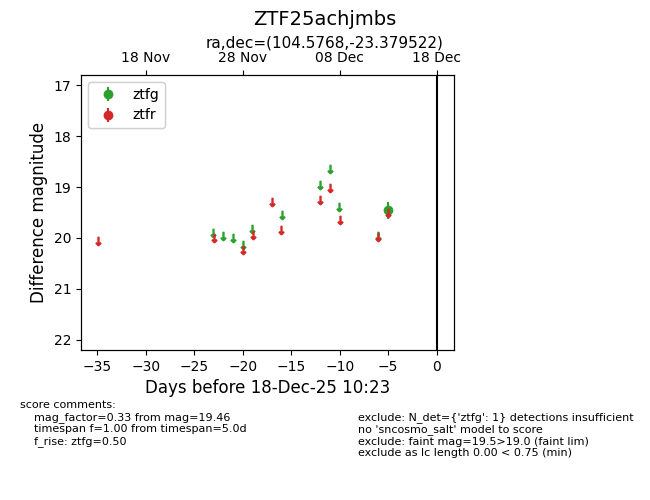
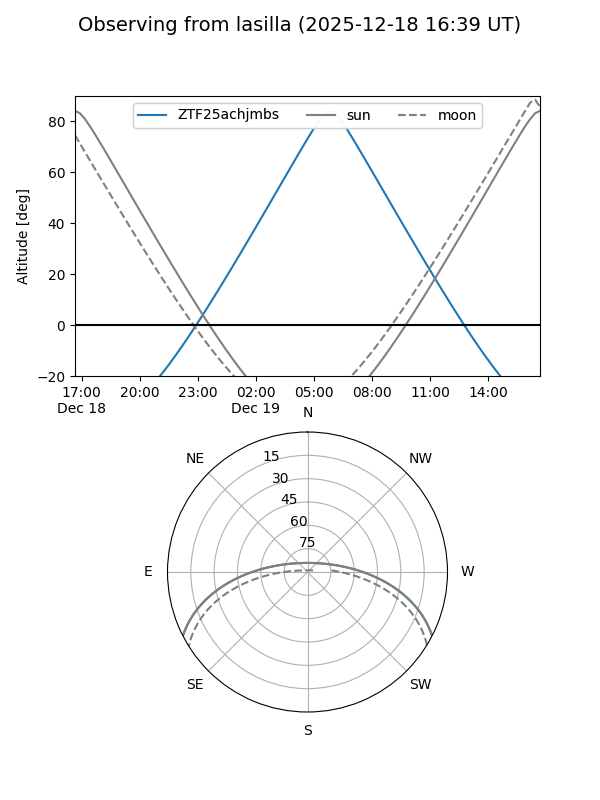
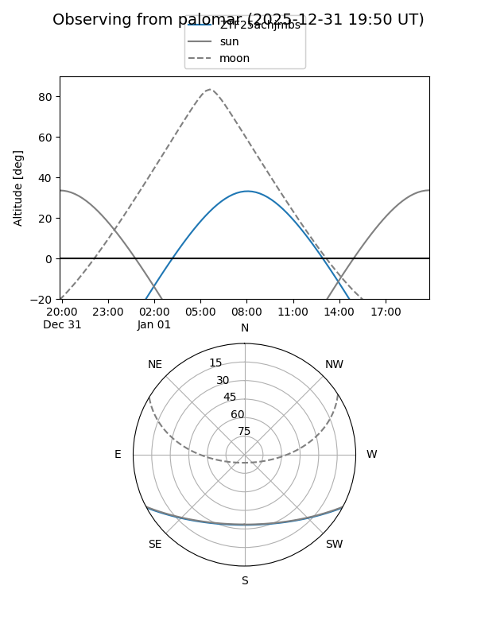

ZTF25achjmbs
Target ZTF25achjmbs at 2026-01-09 12:49
Aliases and brokers:
FINK: link
Lasair: link
ALeRCE: link
alt names
ZTF25achjmbs (ztf,fink_ztf)
Coordinates:
equatorial (ra, dec) = 104.5768,-23.37952
equatorial (HMS+DMS) = 06:58:18.43,-23:22:46.28
galactic (l, b) = (234.6641,-9.00160)
Flags:
Photometry:
last ztfg=19.46
1 ztfg detections
Lightcurve

Visibility


Additional plots